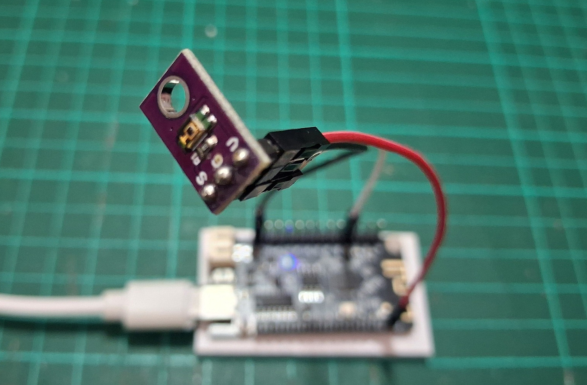
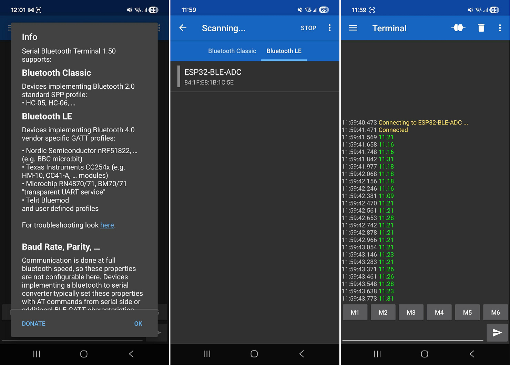
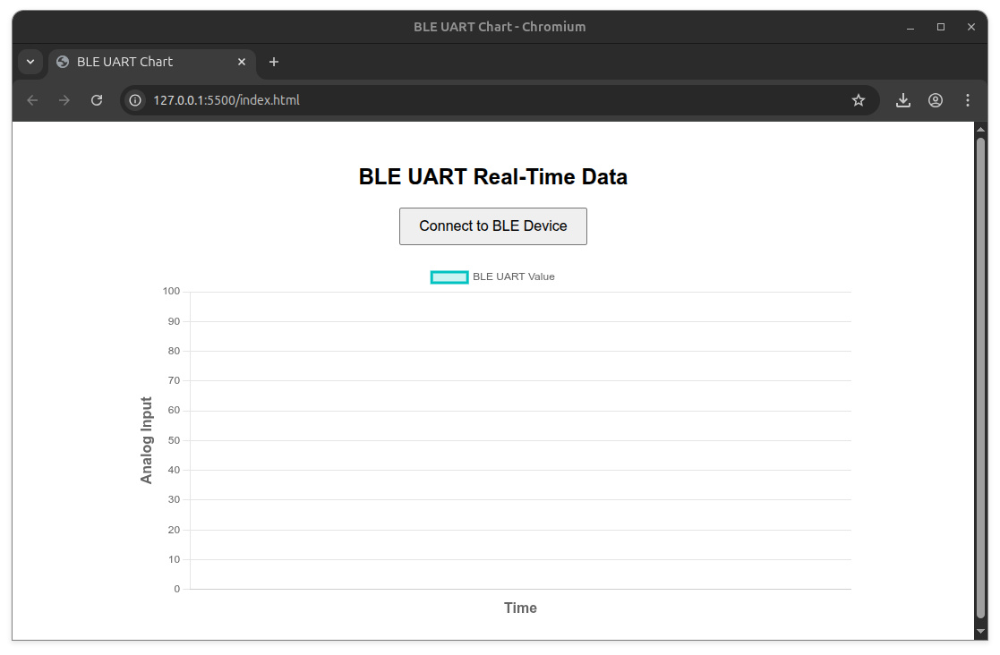
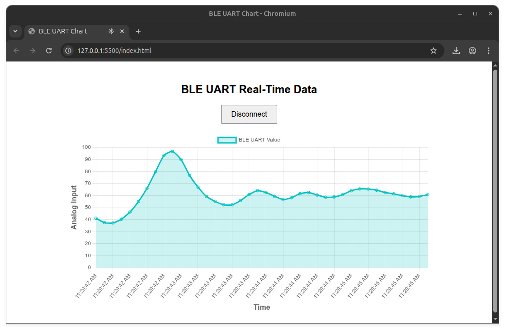
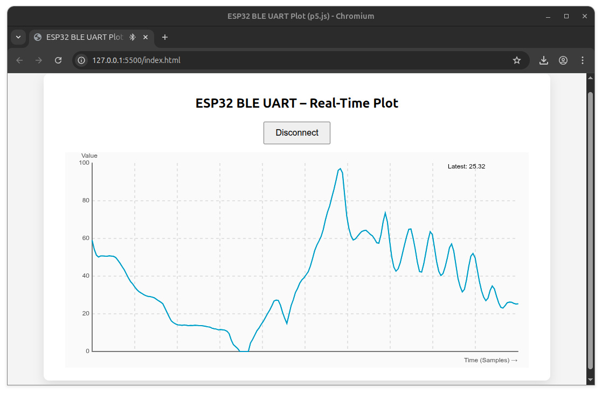

การเขียนโปรแกรม ESP32 เพื่อใช้งาน BLE ด้วยไลบรารี NimBLE-Arduino (ตอนที่ 3)#
- แนะนำ NimBLE-Arduino
- BLE ADC Service
- BLE Client: Serial Bluetooth Terminal
- BLE Client: Processing (p5.js)
▷ แนะนำ NimBLE-Arduino#
บทความนี้นำเสนอตัวอย่างการเขียนโค้ด Arduino สำหรับการใช้งาน Bluetooth LE (BLE) โดยใช้บอร์ดไมโครคอนโทรลเลอร์ ESP32 / ESP32-S3 และใช้ไลบรารี NimBLE-Arduino
⚠ แนะนำให้ผู้อ่านได้ศึกษาและทำความเข้าใจเนื้อหาในบทความ "ตอนที่ 1" และ "ตอนที่ 2"
▷ BLE ADC Service#
ตัวอย่างโค้ดนี้ สาธิตการใช้งาน ESP32 ให้ทำหน้าที่ให้บริการ BLE ADC (UART) Service โดยใช้ไลบรารี NimBLE + FreeRTOS ในการเขียนโค้ด มีการแยกการทำงานของโปรแกรม ออกเป็นสองทาสก์ (FreeRTOS Task) และสื่อสารข้อมูลกันด้วย FreeRTOS Queue ซึ่งจะคล้ายกับตัวอย่างโค้ดในตอนที่ 2 โดยเปลี่ยนจากการรับส่งข้อมูลผ่านทาง Hardware Serial มาเป็นขาสัญญาณแอนะล็อกและวงจร ADC ของ ESP32
การทำงานของ ESP32 ในลักษณะนี้ จะช่วยให้ BLE Client ได้รับค่าจากสัญญาณอินพุต-แอนะล็อก 1 ช่องสัญญาณ โดยอาศัยวงจร ADC ภายในชิป ESP32 แปลงค่าระดับแรงดันอินพุต ให้เป็นค่าตัวเลขในช่วง 0 ถึง 100 แล้วส่งข้อมูลต่อให้อีกทาสก์ เพื่อเชื่อมต่อด้วย BLE ไปยัง BLE Client
ตัวอย่างนี้สาธิตให้เห็นแนวคิดการประยุกต์ใช้งาน BLE ด้วย ESP32 ในลักษณะของอุปกรณ์เซนเซอร์ที่วัดค่าสัญญาณแอนะล็อกได้ (Analog Input) แล้วส่งข้อมูลแบบไร้สายไปยังอุปกรณ์อื่น เช่น สมาร์ตโฟน โดยใช้ nRF Connect for Mobile หรือ เว็บแอปบน Chrome ที่รองรับ Web Bluetooth
ESP32 ถูกกำหนดบทบาทให้เป็น BLE Server ซึ่งเปิดให้ BLE Client เชื่อมต่อเข้ามาเพื่อรับข้อมูลที่ถูกส่งออกมาในรูปแบบของ Notification อย่างต่อเนื่อง
ในเชิงสถาปัตยกรรมซอฟต์แวร์ โค้ดตัวอย่างนี้แสดงให้เห็นการใช้ FreeRTOS เพื่อแยกหน้าที่การทำงานอย่างชัดเจน แบ่งเป็นสองทาสก์ ดังนี้
- ADC Task รับผิดชอบการอ่านค่าแรงดันจากขา GPIO-34 ของ ESP32 ทุก ๆ 100 มิลลิวินาที โดยใช้วงจร ADC ที่มีความละเอียดในการแปลงข้อมูลได้ขนาด 12 บิต (0..4095) และแปลงค่าอินพุต ให้อยู่ในช่วง 0–100
- BLE Notify Task รับผิดชอบการสื่อสารผ่าน BLE เพียงอย่างเดียว
และการส่งข้อมูลระหว่างสองทาสก์ ทำผ่าน FreeRTOS Queue (ตัวแปร adcToBleQueue)
/*
* ESP32 BLE ADC Streaming with FreeRTOS
* Library: NimBLE-Arduino v2.3.6
*/
#include <Arduino.h>
#include <NimBLEDevice.h>
#define LED_PIN 22
#define LED_ON LOW
#define LED_OFF HIGH
#define ADC_PIN 34 // ADC1 safe for BLE/WiFi
#define ADC_MAX 4095.0f
static NimBLEUUID UART_SERVICE_UUID("6E400001-B5A3-F393-E0A9-E50E24DCCA9E");
static NimBLEUUID UART_RX_UUID ("6E400002-B5A3-F393-E0A9-E50E24DCCA9E");
static NimBLEUUID UART_TX_UUID ("6E400003-B5A3-F393-E0A9-E50E24DCCA9E");
NimBLEServer* pServer = nullptr;
NimBLECharacteristic* pTxCharacteristic = nullptr;
bool deviceConnected = false;
QueueHandle_t adcToBleQueue;
struct QueueData {
char payload[32];
size_t length;
};
class ServerCallbacks : public NimBLEServerCallbacks {
void onConnect(NimBLEServer*, NimBLEConnInfo&) override {
deviceConnected = true;
digitalWrite(LED_PIN, LED_ON);
Serial.println("BLE: Client connected");
}
void onDisconnect(NimBLEServer*, NimBLEConnInfo&, int) override {
deviceConnected = false;
digitalWrite(LED_PIN, LED_OFF);
NimBLEDevice::startAdvertising();
Serial.println("BLE: Client disconnected → Advertising restarted");
}
};
void adcTask(void* parameter) {
QueueData item;
TickType_t lastWake = xTaskGetTickCount();
Serial.println("Task: ADC started");
while (true) {
vTaskDelayUntil(&lastWake, pdMS_TO_TICKS(100));
int raw = analogRead(ADC_PIN);
float value = (raw / ADC_MAX) * 100.0f;
item.length = snprintf(item.payload, sizeof(item.payload),
"%.2f\n", value);
Serial.printf("ADC: %s", item.payload);
xQueueSend(adcToBleQueue, &item, 0);
}
}
void bleNotifyTask(void* parameter) {
QueueData item;
Serial.println("Task: BLE Notify started");
while (true) {
if (xQueueReceive(adcToBleQueue, &item, portMAX_DELAY) == pdTRUE) {
if (deviceConnected) {
pTxCharacteristic->setValue(
(uint8_t*)item.payload, item.length
);
pTxCharacteristic->notify();
}
}
}
}
void initBLE() {
NimBLEDevice::init("ESP32-BLE-ADC");
NimBLEDevice::setMTU(247);
NimBLEDevice::setPower(ESP_PWR_LVL_P9);
pServer = NimBLEDevice::createServer();
pServer->setCallbacks(new ServerCallbacks());
NimBLEService* service = pServer->createService(UART_SERVICE_UUID);
// TX (Notify)
pTxCharacteristic = service->createCharacteristic(
UART_TX_UUID,
NIMBLE_PROPERTY::READ | NIMBLE_PROPERTY::NOTIFY
);
pTxCharacteristic->createDescriptor("2902");
// RX (Write)
service->createCharacteristic(
UART_RX_UUID,
NIMBLE_PROPERTY::WRITE | NIMBLE_PROPERTY::WRITE_NR
);
service->start();
// Advertising (Android-safe)
NimBLEAdvertising* adv = NimBLEDevice::getAdvertising();
NimBLEAdvertisementData advData;
advData.setFlags(0x06);
advData.setCompleteServices(UART_SERVICE_UUID);
adv->setAdvertisementData(advData);
NimBLEAdvertisementData scanData;
scanData.setName("ESP32-BLE-ADC");
adv->setScanResponseData(scanData);
adv->setMinInterval(0x20);
adv->setMaxInterval(0x40);
NimBLEDevice::startAdvertising();
Serial.println("BLE: Advertising started");
}
void setup() {
Serial.begin(115200);
delay(100);
Serial.println("\nESP32 BLE ADC Streaming");
pinMode(LED_PIN, OUTPUT);
digitalWrite(LED_PIN, LED_OFF);
analogReadResolution(12);
analogSetPinAttenuation(ADC_PIN, ADC_11db);
adcToBleQueue = xQueueCreate(10, sizeof(QueueData));
if (!adcToBleQueue) {
Serial.println("ERROR: Queue create failed");
while (1);
}
initBLE();
xTaskCreatePinnedToCore(
adcTask,
"ADC Task",
2048,
NULL,
2,
NULL,
1
);
xTaskCreatePinnedToCore(
bleNotifyTask,
"BLE Notify",
4096,
NULL,
1,
NULL,
0
);
Serial.println("System ready....");
}
void loop() {
}
ตัวอย่างอุปกรณ์เซนเซอร์ที่ให้เอาต์พุตเป็นสัญญาณแอนะล็อก มีอยู่หลายประเภท ในบทความนี้ได้เลือกใช้ โมดูลเซนเซอร์วัดความเข้มแสง (TEMT6000 Ambient Light Sensor)

รูป: ตัวอย่างการเชื่อมต่อโมดูล TEMT6000 Ambient light sensor กับบอร์ด ESP32 โดยใช้แรงดันไฟเลี้ยง +3.3V
▷ BLE Client: Serial Bluetooth Terminal#
ตัวอย่างของซอฟต์แวร์ที่ทำหน้าที่เป็น BLE Client ได้แก่ แอปพลิเคชันสำหรับสมาร์ทโฟน เช่น Serial Bluetooth Terminal (v1.50) สำหรับ Android และสามารถนำมาทดสอบการทำงาของ ESP32 เพื่อเชื่อมต่อและรับข้อมูลจากอุปกรณ์ผ่าน BLE ได้

รูป: ตัวอย่างการเชื่อมต่อกับ ESP32 ด้วย Serial Bluetooth Terminal บนสมาร์ทโฟน Android เพื่อรับข้อมูลแบบไร้สายด้วย BLE
▷ BLE Client: Web Bluetooth - Chart#
อีกตัวอย่างหนึ่งเป็นโค้ด HTML สำหรับไฟล์ index.html เพื่อนำไปใช้งานกับเว็บเบราว์เซอร์ Chrome
โดยมีการใช้งานไลบรารี JavaScript ที่มีชื่อว่า chart.js เมื่อเว็บเบราว์เซอร์เชื่อมต่อกับอุปกรณ์ ESP32
ด้วย BLE ได้แล้ว ก็จะได้รับข้อความที่เป็นตัวเลข แล้วนำมาแสดงผลในรูปของกราฟและอัปเดตแบบเรียลไทม์
<!DOCTYPE html>
<html lang="en">
<head>
<meta charset="UTF-8">
<title>BLE UART Chart</title>
<script src="https://cdn.jsdelivr.net/npm/chart.js"></script>
<style>
body { font-family:sans-serif; text-align:center; padding:20px; }
canvas { max-width:800px; margin:auto; display:block; }
button { padding:10px 20px; font-size:16px; margin-bottom:20px; }
</style>
</head>
<body>
<h2>BLE UART Real-Time Data</h2>
<button id="connectBtn">Connect to BLE Device</button>
<canvas id="chart" width="800" height="400"></canvas>
<script>
let data = [], labels = [], chart;
const maxPoints = 40, valueMin = 0, valueMax = 100;
const ble = {
device: null,
server: null,
tx: null,
rx: null,
connected: false
};
const connectBtn = document.getElementById('connectBtn');
connectBtn.addEventListener('click', async () => {
if (!ble.connected) {
await connectBLE();
} else {
disconnectBLE();
}
});
async function connectBLE() {
try {
ble.device = await navigator.bluetooth.requestDevice({
filters: [{ services: ['6e400001-b5a3-f393-e0a9-e50e24dcca9e'] }]
});
ble.device.addEventListener(
'gattserverdisconnected',
onDisconnected
);
ble.server = await ble.device.gatt.connect();
const service = await ble.server.getPrimaryService(
'6e400001-b5a3-f393-e0a9-e50e24dcca9e'
);
ble.tx = await service.getCharacteristic(
'6e400002-b5a3-f393-e0a9-e50e24dcca9e'
);
ble.rx = await service.getCharacteristic(
'6e400003-b5a3-f393-e0a9-e50e24dcca9e'
);
await ble.rx.startNotifications();
ble.rx.addEventListener(
'characteristicvaluechanged',
handleData
);
await ble.tx.writeValue(
new TextEncoder().encode('START\n')
);
ble.connected = true;
updateButton();
console.log('BLE connected');
} catch (err) {
console.error('BLE connect failed:', err);
resetBLE();
}
}
function disconnectBLE() {
if (ble.device && ble.device.gatt.connected) {
ble.device.gatt.disconnect();
}
}
function onDisconnected() {
console.log('BLE disconnected');
resetBLE();
}
function resetBLE() {
ble.connected = false;
ble.device = ble.server = ble.tx = ble.rx = null;
updateButton();
}
function updateButton() {
connectBtn.textContent = ble.connected
? 'Disconnect'
: 'Connect to BLE Device';
}
function handleData(e) {
const value = parseFloat(
new TextDecoder().decode(e.target.value).trim()
);
if (!isNaN(value) && value >= valueMin && value <= valueMax) {
if (data.length >= maxPoints) {
data.shift();
labels.shift();
}
data.push(value);
labels.push(new Date().toLocaleTimeString());
chart.update();
}
}
function initChart() {
const ctx = document.getElementById('chart').getContext('2d');
chart = new Chart(ctx, {
type: 'line',
data: {
labels,
datasets: [{
label: 'BLE UART Value',
data,
borderColor: 'rgba(75,192,192,1)',
backgroundColor: 'rgba(75,192,192,0.2)',
tension: 0.2,
fill: true
}]
},
options: {
animation: false,
responsive: true,
scales: {
x: {
title: { display: true, text: 'Time',
font: { size: 16, weight: 'bold' } }
},
y: {
min: 0,
max: 100,
title: { display: true, text: 'Analog Input',
font: { size: 16, weight: 'bold' } }
}
}
}
});
}
initChart();
</script>
</body>
</html>

รูป: ตัวอย่างหน้าเว็บทดสอบโดยใช้ Chrome Web Browser ก่อนการเชื่อมต่อกับอุปกรณ์

รูป: ตัวอย่างการแสดงรูปกราฟเมื่อรับข้อมูลจาก ESP32 มาแสดงผล
▷ BLE Client: Processing (p5.js)#
ตัวอย่างถัดไปเป็นการทดลองใช้ไลบรารี p5.js
ซึ่งเป็นเวอร์ชันของ Processing ที่พัฒนาขึ้นมาให้ทำงานบนเว็บ
เพื่อการสร้างงานกราฟิกเชิงโต้ตอบ โดยใช้ภาษา JavaScript โค้ดจะรันในเว็บเบราว์เซอร์ผ่าน HTML5 Canvas
ในตัวอย่างนี้ เป็นการสาธิตการใช้ไลบรารี p5.js (ทดลองใช้เวอร์ชัน v2.2.0)
เพื่อนำข้อมูลจากจากเซนเซอร์ หรือ อุปกรณ์ IoT มาแสดงผลบนหน้าเว็บ โดยใช้โค้ดตัวอย่างต่อไปนี้
<!DOCTYPE html>
<html lang="en">
<head>
<meta charset="UTF-8">
<title>ESP32 BLE UART Plot (p5.js)</title>
<script src="https://cdn.jsdelivr.net/npm/p5@2.2.0/lib/p5.min.js"></script>
<style>
body {
font-family: system-ui, sans-serif;
background: #f4f4f4;
text-align: center;
}
#container {
width: 900px;
margin: 20px auto;
background: white;
padding: 20px;
border-radius: 10px;
box-shadow: 0 8px 20px rgba(0,0,0,0.1);
}
button {
padding: 10px 20px;
font-size: 16px;
margin-bottom: 15px;
}
</style>
</head>
<body>
<div id="container">
<h2>ESP32 BLE UART – Real-Time Plot</h2>
<button id="btn">Connect</button>
<div id="canvas-holder"></div>
</div>
<script>
const UART_SERVICE = '6e400001-b5a3-f393-e0a9-e50e24dcca9e';
const UART_RX = '6e400003-b5a3-f393-e0a9-e50e24dcca9e';
let ble = {
device: null,
server: null,
rx: null,
connected: false
};
const MAX_POINTS = 200;
const Y_MIN = 0;
const Y_MAX = 100;
const Y_STEP = 20;
let values = [];
const btn = document.getElementById('btn');
btn.onclick = toggleBLE;
async function toggleBLE() {
ble.connected ? disconnectBLE() : await connectBLE();
}
async function connectBLE() {
try {
ble.device = await navigator.bluetooth.requestDevice({
filters: [{ services: [UART_SERVICE] }]
});
ble.device.addEventListener(
'gattserverdisconnected',
onDisconnected
);
ble.server = await ble.device.gatt.connect();
const service = await ble.server.getPrimaryService(UART_SERVICE);
ble.rx = await service.getCharacteristic(UART_RX);
await ble.rx.startNotifications();
ble.rx.addEventListener(
'characteristicvaluechanged',
onData
);
ble.connected = true;
btn.textContent = 'Disconnect';
console.log('BLE connected');
} catch (err) {
console.error(err);
resetBLE();
}
}
function disconnectBLE() {
if (ble.device?.gatt.connected) {
ble.device.gatt.disconnect();
}
}
function onDisconnected() {
resetBLE();
}
function resetBLE() {
ble = { device:null, server:null, rx:null, connected:false };
btn.textContent = 'Connect';
}
function onData(e) {
const text = new TextDecoder().decode(e.target.value).trim();
const v = parseFloat(text);
if (!isNaN(v)) {
if (values.length >= MAX_POINTS) values.shift();
values.push(v);
}
}
// p5.js setup
function setup() {
const canvas = createCanvas(860, 400);
canvas.parent('canvas-holder');
}
function draw() {
background(250);
drawGrid();
drawAxes();
drawYAxisMarkers();
drawPlot();
}
function drawGrid() {
const xMin = 50;
const xMax = width - 20;
const yMin = 20;
const yMax = height - 30;
const xDiv = 10;
const yDiv = (Y_MAX - Y_MIN) / Y_STEP;
stroke(200);
strokeWeight(1);
drawingContext.setLineDash([5, 5]);
// Vertical grid
for (let i = 1; i < xDiv; i++) {
const x = map(i, 0, xDiv, xMin, xMax);
line(x, yMin, x, yMax);
}
// Horizontal grid
for (let i = 1; i < yDiv; i++) {
const y = map(i, 0, yDiv, yMax, yMin);
line(xMin, y, xMax, y);
}
drawingContext.setLineDash([]);
}
function drawAxes() {
stroke(120);
strokeWeight(2);
line(50, 20, 50, height - 30); // Y-axis
line(50, height - 30, width - 20, height - 30); // X-axis
noStroke();
fill(80);
text('Value', 30, 10);
text('Time (Samples) →', width - 120, height - 10);
}
function drawYAxisMarkers() {
fill(80);
noStroke();
textAlign(RIGHT, CENTER);
for (let v = Y_MIN; v <= Y_MAX; v += Y_STEP) {
const y = map(v, Y_MIN, Y_MAX, height - 30, 20);
text(v.toString(), 45, y);
}
textAlign(LEFT, BASELINE);
}
function drawPlot() {
if (values.length < 2) return;
stroke(0, 150, 200);
strokeWeight(2);
noFill();
beginShape();
values.forEach((v, i) => {
const x = map(i, 0, MAX_POINTS - 1, 50, width - 20);
const y = map(v, Y_MIN, Y_MAX, height - 30, 20);
vertex(x, y);
});
endShape();
noStroke();
fill(0);
text(`Latest: ${values.at(-1).toFixed(2)}`, width - 150, 30);
}
</script>
</body>
</html>

รูป: ตัวอย่างการแสดงรูปกราฟด้วย Processing (JavaScript) เมื่อรับข้อมูลจาก ESP32 มาแสดงผล
▷ กล่าวสรุป#
บทความนี้แนะนำการใช้งาน BLE (Bluetooth Low Energy) บนบอร์ด ESP32 / ESP32-S3 ผ่านไลบรารี NimBLE-Arduino โดยใช้ตัวอย่างโค้ดสาธิตการทำงานในรูปแบบ BLE-ADC มีการสร้างทาสก์ด้วย FreeRTOS แบ่งงานย่อย และให้ทำงานร่วมกัน เพื่อสื่อสารข้อมูลกับ BLE Client ทำให้สามารถรับส่งผ่าน BLE และอ่านค่าจากสัญญาณแอนะล็อกอินพุตได้ โดยยกตัวอย่างการแสดงรูปกราฟบนหน้าเว็บ สำหรับข้อมูลที่ได้รับมาจาก ESP32
บทความที่เกี่ยวข้อง
- ตัวอย่างการเขียนโปรแกรมด้วย Arduino สำหรับใช้งาน ESP32 - Bluetooth LE
- แนะนำการใช้งาน Zephyr RTOS แบบ CLI: ทดลองใช้งาน Micro:bit v2 BLE
- การเขียนโปรแกรม ESP32 เพื่อใช้งาน BLE ด้วยไลบรารี NimBLE-Arduino (ตอนที่ 1)"
- การเขียนโปรแกรม ESP32 เพื่อใช้งาน BLE ด้วยไลบรารี NimBLE-Arduino (ตอนที่ 2)"
This work is licensed under a Creative Commons Attribution-ShareAlike 4.0 International License.
Created: 2026-01-22 | Last Updated: 2026-01-22